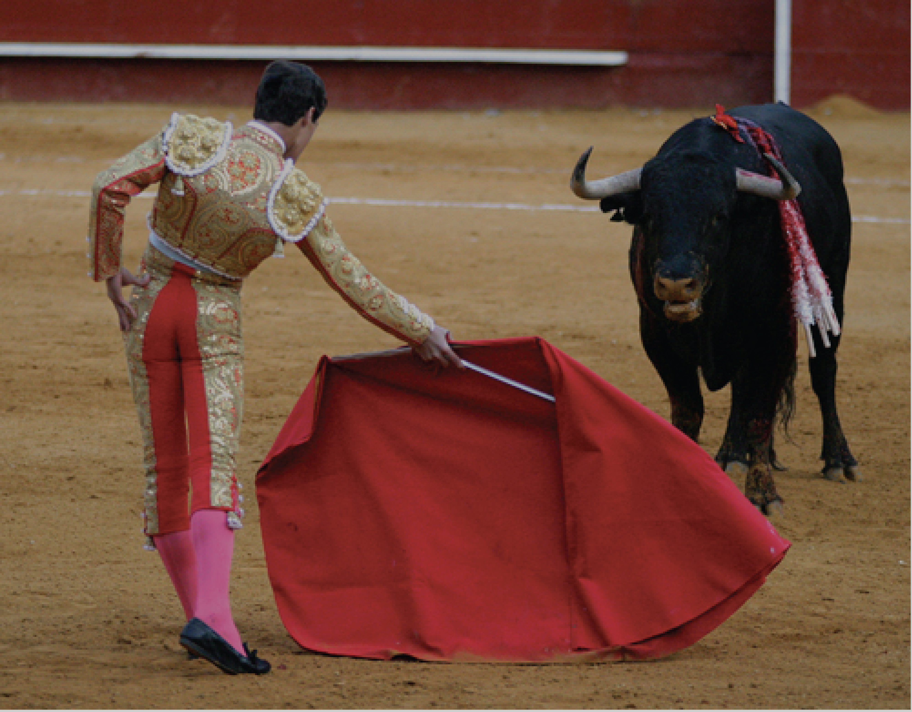

ANIMAL RIGHTS ACTIVISTS PROTEST IN BARCELONA AFTER SPANISH COURT OVERTURNS BULLFIGHTING BAN
By ABC NEWS
October 22, 2016 9:50 AM
H undreds of people have marched in Barcelona to protest the return of bullfighting to the Spanish city.
Spain's Constitutional Court on Thursday overruled Catalonia's regional ban on bullfighting, saying the prohibition violated a national law protecting the controversial spectacle and it was exempt from being prohibited at a regional level.
The court called it a cultural asset protected under national law in the ruling, which is likely to fuel political tensions between the region and Madrid.
Bullfighting has been popular in Spain for generations, but its appeal has waned as animal rights activists and a generation of Spaniards exposed to less traditional values question the legitimacy of an activity they say is barbaric and archaic.
Shortly after the ruling, Spanish animal rights political party Pacma called for protest as part of its so-called "Mission Abolition".
It said it would continue to fight to end bull-related spectacles at a national level, saying on Twitter: "We will not rest until it is abolished in all of Spain".
The group called for more protests to be held in Madrid and other Spanish cities.
Barcelona is the capital of Catalonia, a wealthy region in the country's north east with its own language and customs and a strong and active independence movement.
'There will be no bullfights in Catalonia again'
The region became the first part of mainland Spain to outlaw the spectacle in 2012.
But the move was also seen as a step in the Catalan Government's push to break away from Spain.
Having already refused to accept a ruling from the same court invalidating Catalonia's pursuit of independence, authorities in the region indicated they would ignore Thursday's verdict too.
"There will be no bullfights in Catalonia again," Catalonian MP Josep Rull said.
A long-running dispute with the central Government over Catalonia's independence drive was sharpened in early October when the region's Parliament voted to hold a referendum on secession next September.